{kind=link}
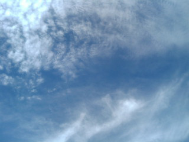
晴れてます。 大雨警報が信じられない空。{kind=link}
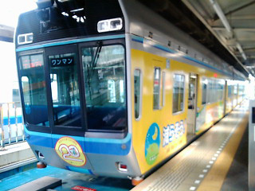
モノレールと電車を乗り継ぎ…{kind=link}
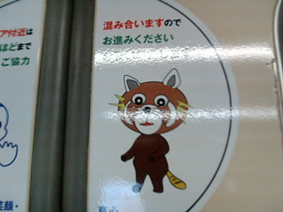
この奇妙なキャラクターは… 風太…くん？か？{kind=link}
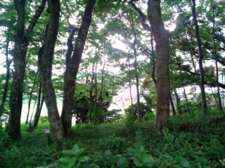
送迎バスに乗って。{kind=link}
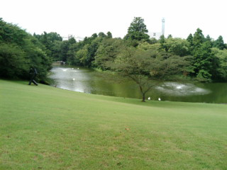
久しぶりにたどり着いたのは。{kind=link}
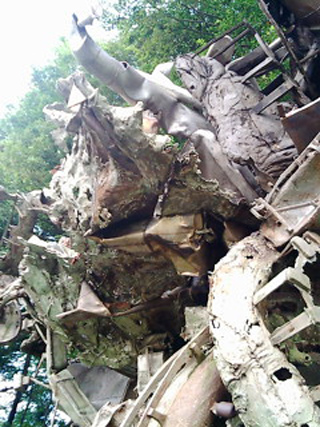
川村記念美術館。 リニューアル後初。{kind=link}
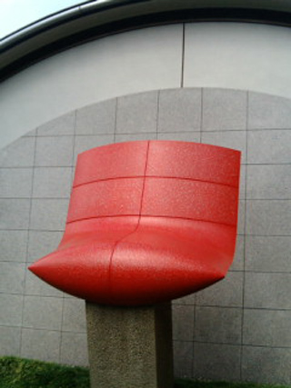
マーク・ロスコとバーネットニューマンの作品の世界観を伝えるための展示室がリニューアルされておりましたです。 バーネットニューマンは良い見せ方してましたですよ。階段を昇るとみえてくる朝日のような真っ赤な作品。 ほのかに外の緑が透けているカーテンと、作品が反射している床。 静かで優しい展示で、ここにたどり着くまでの圧倒的な（ある意味暴力的な？）名作の数々から開放されるようで（なにせ、すばらしい所蔵作品が山ほど）お腹一杯なのに次から次へと並ばれる美味しい料理の途中で運ばれてきたグラニテのよう。 あーでもグラニテの後からも大盛のメインディッシュが次から次へと… まーなにはともあれ、ごちそうさまでした。{kind=link}
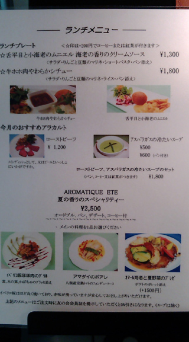
作品も美味しかったけど、 併設レストランが美味しそうでしたよ。 上品そうな親子（夫婦に高校生、大学生ぐらいの息子2人）がメニューの前でどれにしようと悩んでいて、「あら、オマール海老。」「母さんそれにしたら？」とゆーなんでもないようで、幸せそーな会話で和んだのでした。 つーかオマール海老だとランチ4000円ですかー。{kind=link}
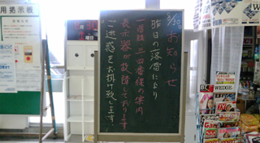
落雷被害。 やはり豪雨はまぼろしの世界の出来事ではないのですね。{kind=link}
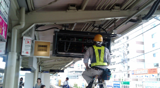
修理中。 京成線に乗って、上野に。1時間ぐらい。{kind=link}
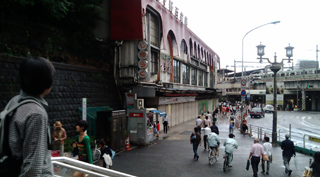
じゅらくヨ～♪ は、もう無いのですね。{kind=link}
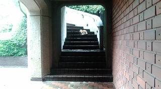
都美術館に行って、フェルメール展の図録を買う。 展覧会自体はあいかわらずの混雑で断念。 絵を鑑賞することは私にとっては対話なので、あまり混雑していると辛いとゆーか、寂しいとゆーか。 猫がどこからかやってきて和む。{kind=link}
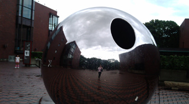
都美術館入り口の作品。 西洋美術館。こちらはコロー展で大混雑。 常設展だけみたいなぁ…と思ったのだけど、チケット買うのにも大行列だったので断念する。{kind=link}
{kind=link}
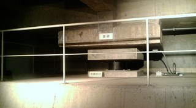
仕方がないから地下の免震構造を見る。{kind=link}
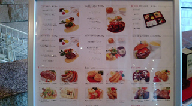
東京文化会館のレストラン。 あれ？前と違うな。高級になってる。昔はデパートの大衆レストラン（食券買うよーなとこ）みたいなレストランで、学生のときにデートでコンサートを聴きに来たときは、ここで良く食事をとったのでした。 当時は都民コンサートとゆー都響の演奏が無料だったのでした（応募制／いまもあるのかな？） まだまだ青い当時の私はむしゃりむしゃりと好きな人の前で食事をするのが恥ずかしくて、ちみちみと食べられるグラタンとかピラフばかりを食べてた。 あんなデートはもうできないな。{kind=link}
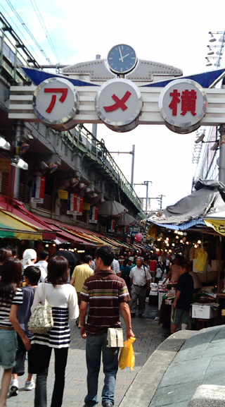
アメ横に行ってみる。暑い。 エッシェンシャルオイルを買う。{kind=link}
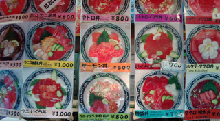
前からこのメニューが目立って気になっていた店に入ってみる。{kind=link}
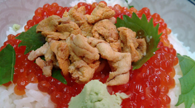
うにいくら丼。 アメ横はケバブが美味しいですよ。{kind=link}
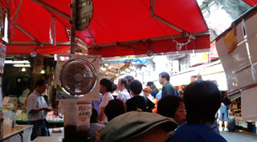
店内からの風景はこんな感じ。 ちょっと別の国に来た感じですなー。これはこれで楽しい。 外国のお客さんも多い。 「オーダー？」{kind=link}
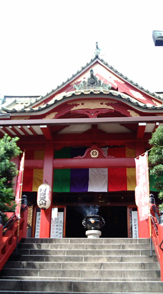
山手線の上野、御徒町間で見えるお寺。{kind=link}
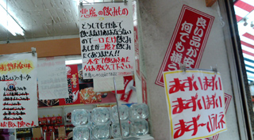
…の横は三木の菓子。 で、まずいソーダ売ってる。正しい売り方だ。{kind=link}
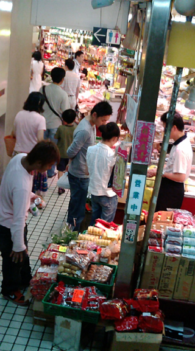
センタービルの地下を散策。 鶏のほにゃららとか豚のなんとかとか牛のみょもろろとか。 つーか、他の日本人は日本語で話しかけられているのに、なぜだか現地語で話しかけられた。 新種のナンパか？{kind=link}
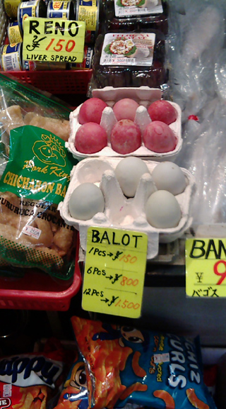
気になって気になって買いたくても買えずに早何年。の、バロット。 だれか一緒にバロットパーティしてみませんかー。{kind=link}
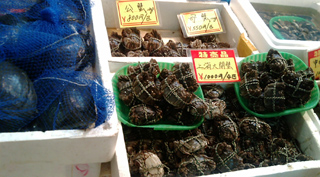
また聞き慣れぬ言葉で話しかけられる。 ぽかーんとしてたら 「カニスキカ？！」と日本語が出てきてくれた。{kind=link}
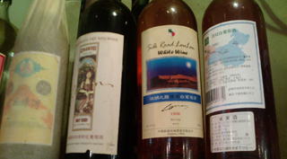
シルクロードワイン！新彊ウイグル自治区産。 わー！保存状態悪そうだけど、気になるー。買えばよかったかなー。{kind=link}
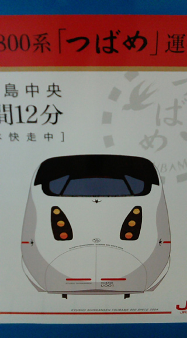
んで、なんだかんだで羽田に向かう。 「つばめ」かわいいな。いもむしみたい。{kind=link}
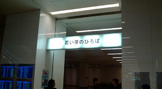
羽田着。 若い芽はここで摘めます。